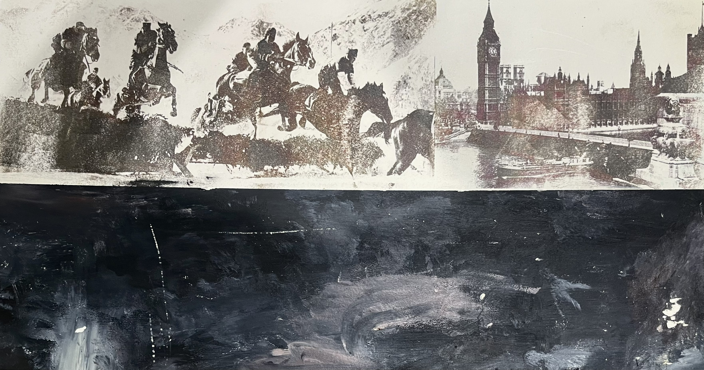
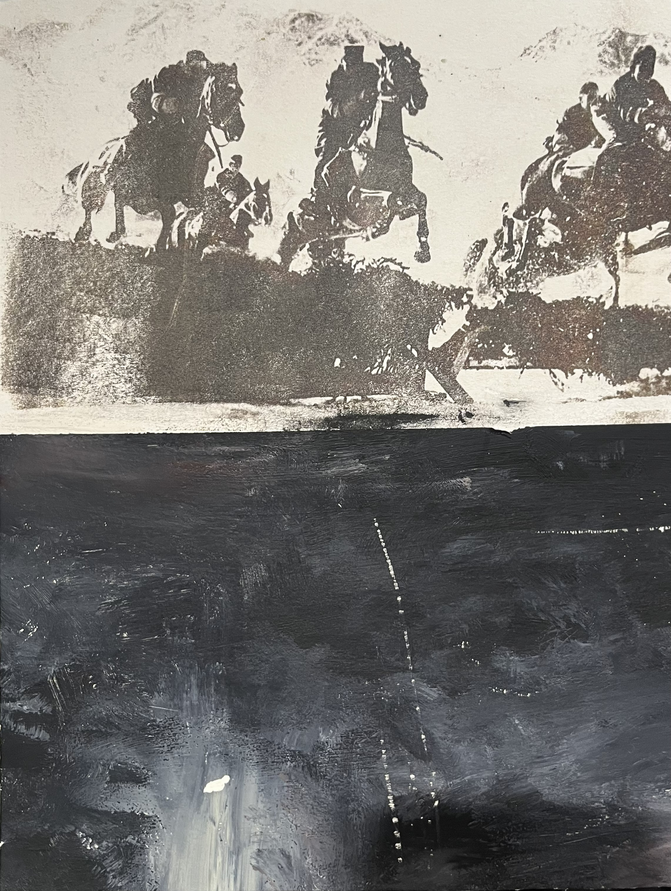
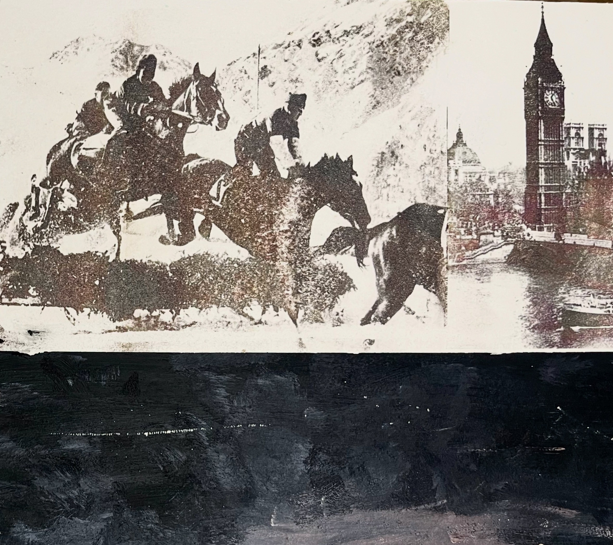

Selected Work
23960 A WHITEMORE
This mixed media work traces the journey of navigating the complexities of identity and belonging. Through layered materials and shifting visual textures, it reflects the tension between constraint and possibility, holding both the weight of where you begin and the expansiveness of the city. The piece speaks to growth as something both personal and geographic.


